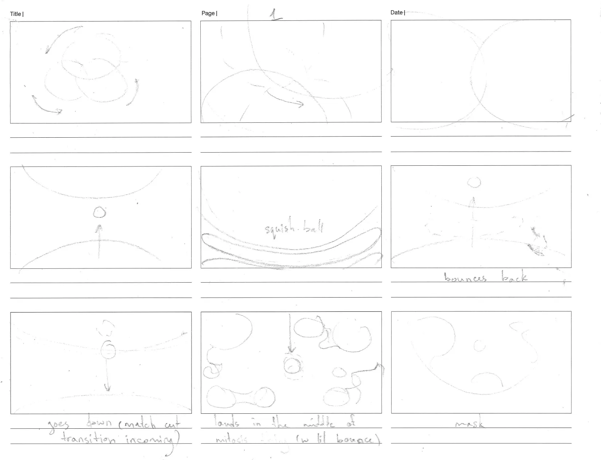
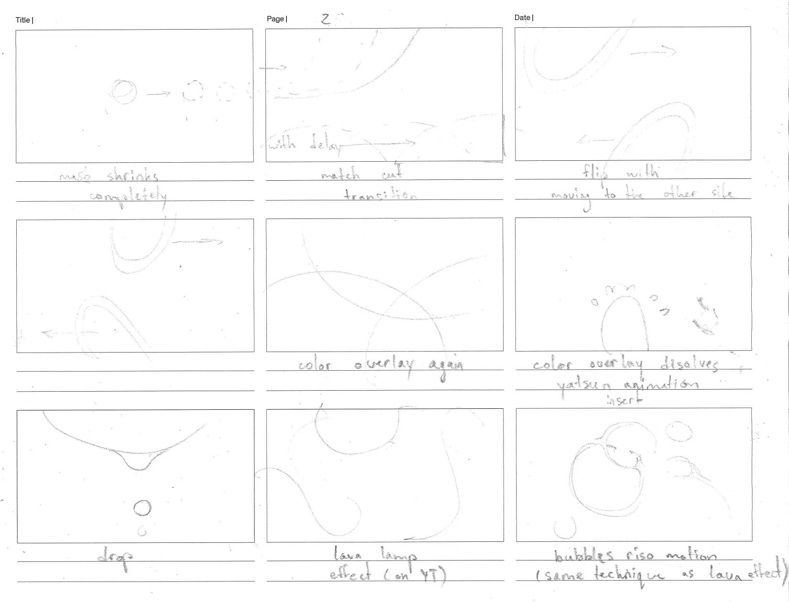
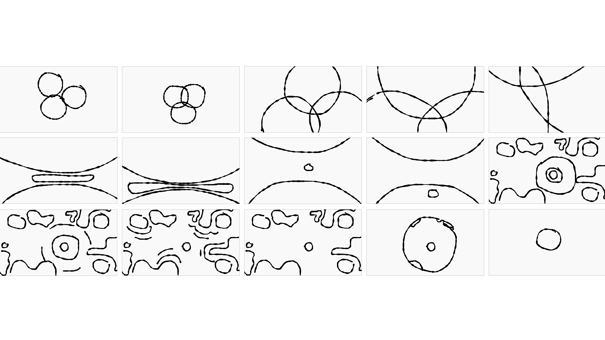
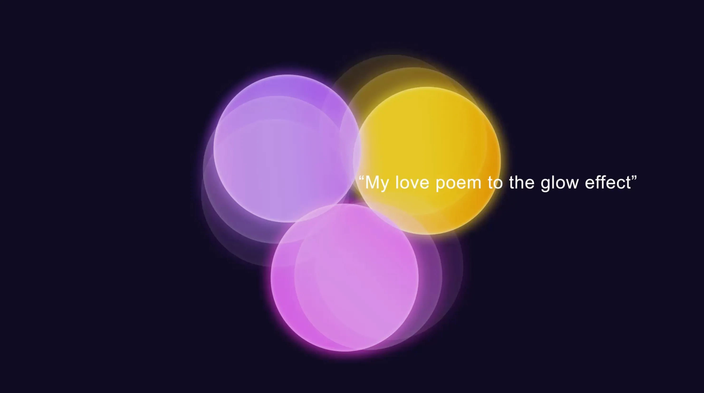

My love poem to the glow effect
Motion Design, 2D Animation
Baltimore MD, 2026
About
When starting this final project my class and I were given three rules. We had to make a 30-60 second abstract animation. To do that, we had to choose a track and create a rhythmic motion design that responds to the flow of the song. You are not allowed to use any text. The motion design could only be based on the beats of the song, not lyrics.
The challenge
I am going to completely honest when I say it the hardest thing for me ever to come up with an animation with cohesive storytelling, especially creating the transitions.
The goal
So, I turned this project into a challenge for myself. A successful result would be an animation unified either by shape, narrative and style.


Frame by frame rough animation sketch

Work in process: styleframes and rendering



Final frames
This style was inspired by the impression I had from from the chosen track – Secret Garden by echo angel. Soft and transparent concentric shapes seemed like the right to use when visualizing angel-like vocals. Glowing layered elements draw a parallel to layered vocal tracks.